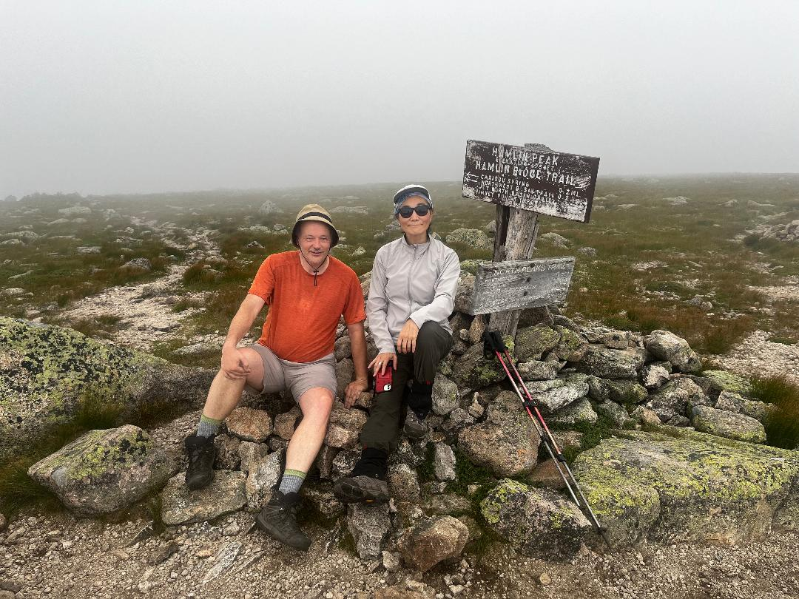
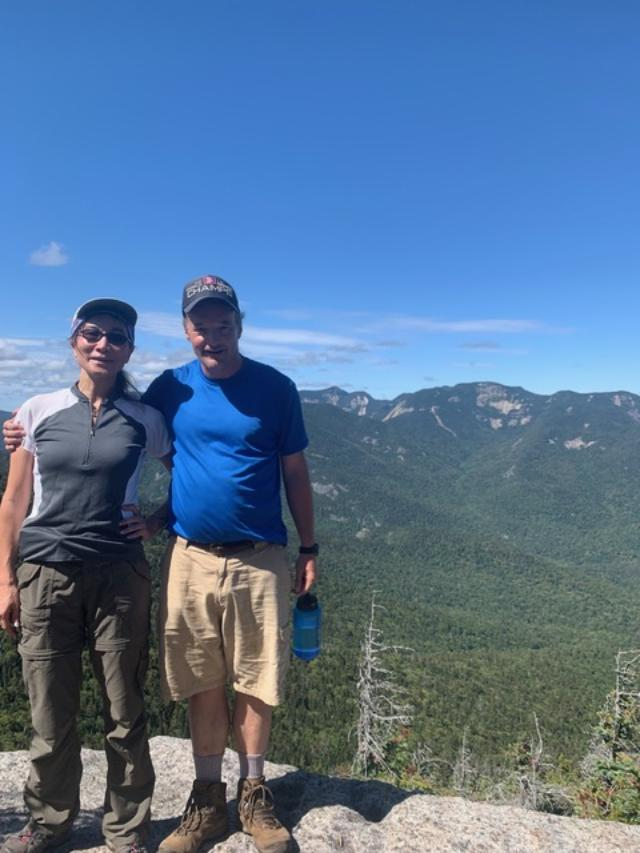
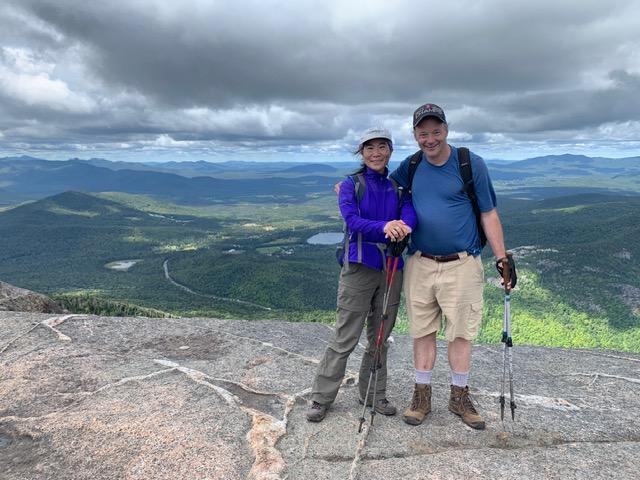

I was looking for another hiking challenge after my finishing winter 48 4000 foot mountains of the White Mountains. I had just left my job in Waltham and had some time off. I had finished the major hiking lists of New England and wanted to try hiking in a new mountain range. The Adirondacks were perfect, thy were about the same distance from Boston as Baxter State Park. Baxter contained the furthest mountains that I would drive to for a long weekend trip.
I decided to try the longer drive to the Adirondacks and knock off two groups of peaks. I met a longtime hiking friend, Andy, in Saranac Lake, after hiking these groups of peaks. My goal was to knock off the Santanoni Range and the Seward Range before seeing him as he was visiting his uncle.
I got to the Santanoni trailhead near the Upper Works parking area and did the road walk into these peaks. There was a herd path (which was new to me for a major mountain) up Santanoni called the Santanoni Express. This trail was bad in places, especially when I had to climb up a cliff with my full pack on. Got to the top of Santanoni and the next Pyramid Peak and decided to camp overnight in an area called Times Square. Found a nice place for my one man tent below the summit. Was lucky enough to see the sunset from Panther Peak after I cooked my ramen dinner.
I hiked Couchsaraga the next morning. I expected it to be an easy ridge walk from Panther. The trail to this mountain was not bad until it went straight thru a mud bog without a bridge. There were a few logs scattered here and there, but it was nearly impossible to cross without getting muddy. It was impractical to go around as that would have been the more pleasant option. I managed to get across without falling in, but on the way back I was not so lucky.
 Between the mud pit and the Santanoni Express, my long hiking pants were ruined, but I still had another mountain range to do, so I decided to hike out as fast as I could and drive right to the trailhead for the Seward Range. I did drive thru a pretty part of Adirondacks to get to Seward trailhead. I stopped in Tupper Lake at Stewarts convenience store for food and water. I was planning to meet Andy the next day for brunch in Saranac Lake, so I did not want to try all four Sewards as I probably would have if I was not meeting him. I decided that I would hike into a shelter at the base of Seymour, camp overnight and hike Seymour in the morning and see my friend in afternoon.
I did share the shelter that night with a guy who had hiked the other three peaks of the Seward Range the day before. I was not in mood for hiking the next three peaks as I was due in town, so I figured I would save them for another hike. That night, we had a heavy rainstorm and a mouse chewed thru the laces of my right boot. I had to climb Seymour the next morning without a heavy pack, but had a wet bare rock trail and a boot that did not lace up. I climbed Seymour in the morning and hiked the long, 5 mile road walk back to my car. I was ready for town after these two longer than expected hikes. I checked in to a motel on Lake Flower in the town of Saranac Lake. Boat rentals were included with stay at this motel. Andy and his uncle were staying at the Days Inn across the street, so it was very convenient. I was shown around the town by them. We did brunch the next morning. I kayaked a couple of miles to the center of town and back before heading home to Boston. On the way home, I saw the trailhead for Giant and Rocky Peak ridge, so I stopped for a quick hike. The hike up Giant and Rocky Peak Ridge was not as easy as I thought. The hike up to Giant was fun. I especially like seeing the views off the cliffs near beginning of hike and seeing the Giants washbowl, a nice mountain lake, very early into hike up mountain. The summit was very buggy in mid June so I could not stay long. The trail over to next peak, Rocky Peak Ridge was really bad because it descended for 1000 feet before going back up 1000 feet. I felt like I had a successful trip after finishing these mountains. These hikes were a nice introduction to the Adirondacks. It made me realize that these mountains were not as easy as the mountains of New England that I had always been used to doing. I did not read this until I was done with my 46ers, but these Adirondack mountains were part of a Canadian mountain range, not the Appalachians, the primary mountains I was used to hiking. The mountains had more cliffs, more slides and the trails were generally as hard as the hardest trails that I had hiked in my native White Mountains. I had climbed 7 of the 46ers on this trip, but I was hooked. I had hiked Marcy years before, so my peak total stood at 8. I knocked off a good amount in one trip. It was a six hour drive to get to Adirondacks so I wanted to do as many peaks as I could in a few trips as possible. My second trip out to Adirondacks was to hike part of the Great Range. This trip did not involve as much driving as my first trp. I drove to the Ausable parking lot in Keene Valley and backpacked in to knock off as many peaks as I could of the lower Great Range. I purposely started midday as I was backpacking in to set up my tent somewhere in the ridge between the Sawteeth and Gothics. I hiked up the AMR road to the Upper Ausable lake and thought that this hike would not be so bad. I stopped at a nice waterfall near the lake for a bit and headed up to the col of Sawteeth and Gothics to see if I could find a camping spot. I found a nice little clearing for my one man tent. I set my tent up and took my dinner to the nearby summit of Sawteeth. It was great to watch the sunset over the cloudless Great Range. I did enjoy this sunset and looked forward to the next days hike. The next day was filled was so many peaks that were beautiful. I climbed Pyramid peak just before the Gothics. The view was incredible from both summits. I decided at this point that although it would be a long hike out, I could get Saddleback to avoid having to climb it in the future. I was very glad I did. The trail down the Gothics had ropes on the trail for hikes to use as the slides were so steep. I had never hiked that long of a trail with ropes on it. I ran up and down Saddleback and back to the Gothics pulling myself up on the rope.
I had a nice hike over to Armstrong and Upper and Lower Wolfjaw after that. The descents were crazy, I thought to myself that I am glad I am not climbing this way as many people doing the Great Range traverse do. The last peak, Lower Wolfjaw was an annoying scramble to summit after trail left to head down, but as it was the last peak of trip, I did not mind that much. The hike was a nice descent to AMR road. Hikers always wish that the buses of the Ausable club would stop and pick them up as I did at this point. I finished the hike very late and did the drive back home. I was happy to get another 6 peaks for my list bringing my total to 13. In two trips, I knocked off more than a quarter of my 46ers. My next trip was one week after I recovered from my Great Range hike. This time, I wanted to knock off the entire Dix Range and explore a new area of the Adirondacks hiking from the Elk Lake Lodge. I drove out from Boston at a normal time, 8am, I did not get going on the trail until 1pm. My plan was to hike a loop of the Dix range starting with Dix and looping down Macomb back to the lodge.
I did not get to Dix summit and the Beckhorn until 6pm. I lost one water bottle on a scramble near the summit. I did not want to spend time looking for it and figured I could do rest of hike with one bottle of water. The views from Dix and the entire Dix range were really great. I proceeded to knock off the peaks of the Dix range and finish on Macomb and 9pm just before darkness. I was happy that I could see sunset from the ridge and that I could be close to finishing by running down trail and could get back to Elk Lake at a somewhat reasonable time. I looked for a trail down for 30 minutes as darkness was coming. I could not find anything (the real trail went down a slide), so I backtracked on trail I had just done. I got off the summit and saw a herd path going down a mountain slide which I thought would curve around and head back to lodge. I hiked for an hour, then two hours and started to realize that this trail should have met up with main trail already. As I passed three separate streams and some ponds, I started to realize I was not in the right place. Rather than hike back up the mountain in the dark, I decided to follow this herd path. At 1am, I came out on a road I recognized. This was Rt. 86 not far from Chapel Pond which I had driven by many times before. My choices were to hike ten miles via trail over Colvin and Blake or walk twenty miles back to my car. Considering that I had one water bottle and not much food, I decided to try the road walk and hopefully hitch a ride. I did not see any traffic between the trailhead and the interstate highway Interstate 87, so I walked a bit further to stop at Sharp Bridge Campground at 3:30am. I was starting to fall asleep at this point, so I pulled out my National Geographic Adirondack map to look for a place that I could pitch my tent. I decided to tent at a roadside rest area off of Route 9. I hoped I could get a ride to town the next morning. I put up my tent behind a tree and got 3 hours of sleep. I started walking at 7am and hoped I could catch a ride. There was hardly any traffic to flag down, so I kept walking until my favorite gas station in North Hudson, off of Interstate 87. My hiker brunch (candy bars and soda) at the gas station was quite nice and gave me the energy to walk the final five miles back to Elk Lake Lodge. I finally got back to my car and decided that was all for Adirondack trips that year. I had climbed the 5 peaks of the Dix range bringing my total up to 18, but also had one of the craziest single overnight hiking trips of my life. I headed home and was proud of the many Adirondack peaks that I had done that summer. Mari and I climbed three of the peaks that I had missed on my first trip to Adirondacks, the Seward Range. This was good for me as Mari is a faster hiking speed as I prefer when I am hiking by myself. We went to park where I had before in the Seward Range parking lot. The road walk in was 5 miles which we were not used to hiking in New England. We hiked to the summit of Donaldson in a rainstorm. I pleaded with Mari to hike to extra peak, Emmons, as I needed it for my 46ers. She reluctantly agreed to hike to Emmons with me. We even did Seward after we had climbed Donaldson. The road walk out after hiking for 10 miles was not enjoyable. Mari still had her full energy at the end of this trip and I could not keep up with her for the last few miles and met her in the parking lot. Mari and I decided to drive an hour from our campsite to climb Whiteface and get Esther on the way up. Esther had a nice plaque at the top to commemorate a hiker who had been lost in the Adirondack wilderness many years before. We climbed Esther, rested briefly and climbed Whiteface. There is an auto road up Whiteface, so it was not a total wilderness experience. We managed to find a restaurant at the top to order a burger and a beer, but did not have view at all. Whiteface was in the clouds for the entire time that we were there.
We had a nice group camping trip to the Loj camp where I had not been since 2004. I brought Mari, Diana, Andy, Denise, Bryan with main goal of hiking the Algonquin range. We had two meetup friends, Jon and Jen Clark, meet us at our campsite to hike the Algonquin range. As someone after my 46ers, I left the main group to climb Wright with Jon and Jen. I rejoined the bigger group on Algonquin. All of my group met on the summit of Algonquin. On a sunny day, we had great views.
Diana, I, John and Jen were the only ones to hike to the third peak, Iroquois. This hike involved hiking over another peak, Boundary Peak, and mistakenly taking the trail down to Avalanche Lake for a minute instead of the proper herd path over to Iroquois. We summited and celebrated our third peak of the day. This was a fun group trip and friends wanted to do it again the following year, so I projected my 46ers finish to be on July 4th the following year. At number 29/48, it was possible. I decided to hike as many peaks as I could this weekend by backpacking into the Flowed Lands area and getting as many peaks as I could before the next year. I backpacked into to Opalescent shelter in a swampy area below Lake Colden called the Flowed Lands. This area had many shelters and enabled me to leave my big backpack and do many crazy day hikes. The first night I got to the Flowed Lands, there was a rescue of someone who decided to climb on a waterfall and call the rangers to get rescued. I got to the shelter before dark and my companions, a father and son that were at the shelter for most of my stay were telling me this. They lived locally by another major trail of the Adirondacks, the Northville Placid trail. I climbed the longer hike, Allen, the first day as I decided to get the hardest peak out of the way at first. This involved hiking down past the waterfall that the rescue had occurred the night before. This water fall was nice to look at, but I could how people could get stranded. The hike up Allen was interesting coming from the north. I did not have any of the river crossings or mud pits that I had read about that day hikers have coming from the Flowed Lands parking lot. The trail to Allen was not really bad, just long. There were a couple of spots where I had to hike up wet bare rock, but it was not a big deal as I had to hike these conditions before for many ADK peaks. Allen was just a long day hike from the road which I did not have to do. I returned to the Flowed Lands that night and was glad that I got one of the hardest ADK 46ers out of the way.
The next day was a very long day as I planned on getting 4 46ers, Skylight, Grey, Cliff and Redfield. Hiking to Skylight was the longest part of day. I barely remembered hiking to the lake below Skylight, Lake Tear, before as I had hiked with Mari down from Marcy before in 2004, apart from our group. I hiked my best 46er (to that point), Skylight first thing of day and could easily have spent all day there. The views were 360 degrees and incredible. I climbed Grey next after Skylight and was not as impressed. Making good time, I got to the base of the Cliff and Redfield trails at 2pm. I thought both peaks would take me two hours and I would be back at camp by dinner. Redfield alone took me two hours. Cliff was a surprising hike up three cliffs. I did enjoy doing this as a fourth peak of day. It was such a long day that I got back to Lake Colden at 7pm and made it back to the Flowed Lands by dark at 8:30.
I climbed Marshall first thing in morning. I happened to meet the area park ranger while climbing this mountain. I talked with him for awhile about the waterfall rescue that had happened the day before I got there. I came down from Marshall and briefly considered hiking the 1.5 uphill miles to Colden, but figured it was better when I had some strength next year. I was so tired after these 7 peaks! At 35 / 46 peaks, I was more than happy with my progress. I had gotten some of the most remote peaks in the Adirondacks. Mari and I drove out to Sharp Bridge campground, where I had stopped at 3:30am the previous year to be closer to hiking mountains that I needed and were very close to the main highway, I 87. This cut an hour off our usual drive to the Adirondacks. Andy and Diana joined us for the weekend at this campground. The first full day that we camped at the Sharp Bridge campground, I chose the easier mountains Cascade and Porter. Diana, Andy and Mari enjoyed these peaks as much as I did. These were probably the easiest 4000 footers of the Adirondacks as they left the road at the highest point not far from Lake Placid. There was an ADK outpost setup close to the trailhead this day. The 4 of us climbed these peaks without a problem and spent some time at summit of Cascade as the summit was so pretty. The trip over to Porter was fairly easy hike and had nice view of the Great Range. Dial Nippletop Blake Colvin We had a nice rest day in Lake Placid before hiking again. This was a very long 14 hour hike with Mari starting from the nearby Sharp Bridge Campground. We tried to park at Ausable parking lot as I had done before, but it was filled up on Labor Day weekend so we had to park up on Route 87. We walked up the Ausable road until we got to the Dial trail. The trail went right to the top of Dial over a ledge of Noonmark Mountain. The views from this ledge of Noonmark Mountain was fantastic of the Entire Great range. Dial was a wooded summit, but Nippletop was a great mountain. Mari and I spent over an hour on Nippletop, the 360 degree views were so good. We went down very steeply thru a nice lake camping area and got to the Blake Colvin trail junction fairly late. It was dinnertime by the time we got to our third summit, Blake with a nice views of the Ausable Lakes below.
 Our fourth summit, Colvin, was a hard mountain with slides. We did not enjoy hiking to this and back on steep trails. We hurried along thru the approaching darkness. It finally got dark near a cutoff to the AMR road, leaving us with a four mile roadwalk. It was after 9pm by the time we finished. We were lucky enough to have the Noonmark diner close by still open. We were the last ones in the place and put our food order in right before the kitchen closed. We were behind some friends of mine (John, Jen and Adam) who were finishing Adam's 46ers that day on Sawteeth. There was no way I was in the mood to hike a fifth mountain that day. This peak brought me to 38/46. I only had five day hikes left. I tried a meetup trip in the winter for this hike on a Presidents Day weekend. The main hike was for the Seward Range, which I had done with Mari already, but I had Greg from meetup, do Big Slide with me the day before so I could bag another peak. I knew John, Jen and Adam on this trip already so it wasn’t all strangers. Big Slide was a fun trip. I had been reading how hard the Garden parking lot was to park at for a couple of years. It was a case of what you heard was not as bad as it actually was. Greg and I actually made good time up the Brother mountains before hiking to Big Slide. The hike had very good views of the Great Range, one ridge over, for the entire hike. It was interesting hiking the final ascent to Big Slide and having the ladders next to us. Hiking in the snow provided better footing than the ladders would have. We stayed in Lake Placid at a friend of Gregs place for the weekend which was great not only because of the proximity to the peaks, but we also were in town for the 40th anniversary of the 1980 Winter Olympics. I had hiked the Seward range with Mari the previous fall, so I knew what was ahead of me the next day. Our group with Adam, John and Jen not only hiked to Donaldson as Mari and I had done six months previous, but we had to break trail for entire trip. This was exhausting. I broke trail for ten minutes and fell to the back as there were younger and stronger hikers that were ready to break trail for us. We climbed Emmons and Donaldson but with the short winter days we skipped the third peak, Seward. I was fine until we got back to the road walk out, but I slowed down significantly behind the group at that point. I managed to catch up with John before the end, but was surprisingly winded after that hike.
It was nice to celebrate after hike in Saranac Lake with John and Jen before Greg and I returning to the place we were staying, a private house in Lake Placid. That night, I had trouble breathing for a few hours. I thought it was a cold, but one month later we found out that it could have been Covid 19. I was lucky to not to have had to go to the hospital. It was nice to go to the bobsled ramp and see how the line was the next day. I had done a bobsled ride at the Olympic Track in Calgary in 2001, so I was interested in trying this. With a two hour wait, Greg and I figured that it would be easier to go home. I was happy that I was peak 39 / 46 after two years. This made for quite the celebration! July 4th week, 2020 I decided to leave Lexington a day earlier than I had originally planned on a Sunday for the final weeklong hike to finish my 46ers. The original plan was to start from the Garden parking lot on Monday morning. I did not want to have a repeat of a hike like the Dix Range where I started at 1pm, so I was sure to drive out on Sunday afternoon. I hiked in from the nearly empty lot to johns brook lodge at 6pm, planning so I would have a full day Monday to hike Basin and Haystack. I saw two weekend caretakers hiking out as I was hiking in and they told me that all the lean tos and the lodge were empty. That made me feel good as I did not have to fight for space anywhere that night. I did have my tent with me just in case as I had all my overnight stuff for the short hike in to the lodge. The Johns Brook lodge was closed because of covid. The lodge did leave a water source on for passing hikers which was nice. I decided to sleep on a front porch of a cabin away from the main lodge as noone was there, not even a caretaker. It rained briefly overnight and I am glad I decided to sleep under a roof. I got up at 6am in the morning to a totally quiet camp. I decided to hide my big overnight pack in an unlocked closet as it was next to where I slept. I could latch it from the outside, so no animals could get in. Was so glad I didn’t have to carry a big pack up to the Great Range I left at 6:30am to hike the trail to Basin. I met a father and son near the Basin trail junction that were very exhausted. They had just climbed Haystack from the
loj. They were complaining about the climbing over rocks being tough and they had camped overnight. They asked me the quickest way back to the Loj. I offered them a ride back to the Loj from the Garden lot if they could wait until 6pm. I climbed up the basin connector trail to reach the Great Range trail. I was surprised that this trail went down after it climbed a ridge before the Great Range trail. I thought for a few minutes that I had gotten turned around and was headed back to Johns Brook lodge. I was relieved when I got to main trail and saw the sign for Basin. I was climbing up to Basin and slipped on a cliff going up the trail skinning my elbow as I grabbed the rock with all four limbs. There was no view from the summit of Basin to reward myself on this first peak of the Great Range and of this trip.
I met a teacher, jeff from buffalo, at the top of this cloudy basin summit. I hiked with him over to Haystack. The clouds cleared on Little Haystack before the main summit. We got a great view of most of great range from Haystack. We had a very windy summit. We had to stand between the rocks on the summit to shelter ourselves from the wind. He ran down the mountain and I could see him far ahead of me as I hiked down Haystack, but never ran into him again. He had climbed from the Garden instead of the Loj, so he had hiked an extra 3.5 miles than I did in the morning. He also went over Saddleback to get to Basin where had met him. I had heard enough about that Saddleback cliffs section to skip it on this trip. I was happy once I reached the trail back towards john brook lodge as the rain clouds were threatening. The trail that continued on to the Loj went straight uphill to Mt. Marcy.
On my way down the trail to the Garden, I got rained on for a couple of miles. I finally stopped and put on my raingear at slant rock, where I had met the father and son in the morning. The rain helped wash the sweat off my forehead. It was like taking a shower while I hiked. I was very glad that I was in the valley before the rain hit. As I put on my raingear, it seemed strange that this was exactly where I had seen the father and son in the morning. I got back to Johns brook lodge where I had ditched my heavy pack the day before, at 5pm. It was nice to see that no animals had found the closet that I put my pack in. I hiked the final 3.5 miles out to the Garden parking lot with my heavy pack. I got to my car at 7pm after a tiring 12 hour hiking day. I went to the local Keene Valley Stewarts shop for a sandwich and soda. I drove to find a free camping spot before dark next to the Marcy Dam trailhead at South Meadow. I loved the South Meadow camping area as it was at a new way for me to get to Marcy Dam. I would be at this camping spot for two nights. It was nice to be car camped right in front of a trailhead that went straight to Marcy Dam, my destination for next day. I hiked an 11 hour day on this Tuesday as I got to hike past Marcy Dam and Lake Arnold to Colden. I got to my first cloudy summit of Colden with a boulder, which I had seen in pictures. I had no idea that I was not at true summit until I got out my phone and the Alltrails app. At this first summit of Colden, I texted Mari to see whether I should do a second mountain (Tabletop) to save time on our weekend group hike. She agreed that I should, so I decided to do Tabletop after Colden.
I summitted all three peaks of Colden, took the trail back to Lake Arnold and took a connector trail to Indian falls. The trail to tabletop mountain left from the main Loj trail very close to Indian Falls. Tabletop was a muddy steep mess as it had rained the last night. The cliffs and mud were really bad on this mountain. I was happy to go down this mountain and hike out the same route we would hike as a group in two days. Don’t think everyone in my group would have enjoyed this mountain. The views were limited and the work to get here was not worth it. I did one final hike before the group showed up at the campground for the July 4th weekend. My second to last 46er hike were Street and Nye. I packed up my car camping stuff, and headed out to the Loj day use parking.
This hike from the Loj was a sloppy hike in general as trails had not completely dried out. The worst part of this hike was the river crossing with no bridge. The water was quite high, but I did find a log to cross over the stream and bushwhack along the stream on the way in. I hiked both Nye and Street summits very quickly. I lingered on the summit of Street for a few minutes and met Alicia. She was an aspiring ADK peakbagger. I hiked with her down the mountain trail to the river. I wanted to cross the river another way this time to see if it could be done easily. We both forded the river in different places. I found a short river crossing where I only had to cross ten feet of river with socks, boots and phone held above my head. The current of the stream was so strong that I was swept downstream for a few seconds. Alicia watched me and thought she might have to dive in to save me. I was fine and my boots and phone were all dry. We hiked back to the loj with a unusual ending to day for me. I decided to join the adk club at the loj as I as almost finished with my 46ers. On our trip down the mountain, she recommended dinner at the Big Slide brewery close to the campground entrance. I drove to dinner at the big slide brewery with all my car windows down. My car smelled really bad with all my wet, dirty camping stuff and stinky hiking clothes. Unfortunately, there were major tstorms while I was sitting inside eating my chicken sandwich at the resteraunt. I saw heavy rain falling out the front windows while I was sitting towards the back of the bar. I ran out to my car as quick as I could in the pouring rain. The entire car got a good drenching. I managed to get a replacement tent pole at EMS Lake Placid as one aluminium pole piece had broken on my one man tent that I had had since my AT thru hike in 2003. I bought a 46er book at a local bookstore in Lake Placid on the way back. I got another site at south meadows for a third night, setup my tent at the site and went to sleep. I went swimming at Heart lake of the loj two times before my friends showed up at 4pm. Mari, andy and diana had already eaten on the way to camp, so we could relax for rest of night. There was a chance of storms the next day, so my group wanted to push off my last 46er, phelps, until the next full day on Saturday. I woke up at 7am and ran up Mt Jo, an easy hike behind the campground before anyone was awake. This was an easy one hour hike up from the campsite. Views of mountains were socked in so I could not see very much. I could barely even see the mountains that I had done the previous day, Street and Nye, three miles away. I got back to camp before 9am and people were starting to stir. They all got up and decided to go to saranac lake for lunch. I showed them the Saranac Lake 6ers display in the town gazebo. We read about a local curse for people that don’t complete all the 6 mountains, but ring the bell. I did not want to risk a curse by ringing the bell. We decided to rent canoes from a Saranac Lake place near the motel that I stayed when I had met Andy after my first 46ers, to explore lake flower. We got to the place to rent two canoes and put them on the roof of our car. We drove the short way to the tennis courts along the lake to put them in the water. We did a nice long two hour canoe down the lake to another lake and back. We got back to Lake Flower, our two groups split up. Mari and I wanted to grab an ice cream from Mountain Mist on the lake shore. We got out of our canoe and I discovered my car key was not in any of my pockets. I asked Mari if she had my keys. She said why would I have your keys?. We looked for keys around the ice cream place and back near the car, where it could have been lost in first place. I called AAA and a local Saranac Lake mechanic came to unlock my door. The AAA guy and I spent a couple hours looking for my key and going thru all my options. I had to have a new key made, so I had to have my car towed to local ford dealer. Andy and mari came by and we all crammed into one car for trip back. Mari and I stopped at mcdonalds for dinner on way back as we had missed dinner with others. Mari asked me what the worst case scenario would be and that is what happened! We all hiked my last 46er, Phelps, in good weather the next day. I spent over an hour relishing the views from this peak. It was fun to be able to name all the peaks around me. We also ran into some bostonians on the summit. It was fun to finish my 46ers and Northeast 115 on thi summit. It seemed like I had spent a long time getting all 46 peaks, but it was only three years. I had the same type of feeling of accomplishment that I had when I finished the Appalachian Trail. That also included the feeling of wanting to go back to Adirondacks and hike the mountains that I had no views on.
 We celebrated that night by going to andys favorite restaurant near Lake Placid, the hungry trout. We had small fire at camp afterwards. We loaded everything in andys car on Sunday and drove over to ford dealer where they dropped me off at 2pm after having brunch in lake placid. This dealership would become my home for the next three days. I decided to hike one saranac lake 6er behind ford dealer, scarface mountain, as the trail was very close to the car dealership as it was only 2pm. This mountain was a bit easier than the ones I had done all week long. This mountain was 3000 feet and not very challenging. I did enjoy seeing the lake that I had just paddled a couple of days before. I snuck off the main trail to find some nice ledges with good views of these ponds. This mountain was deceptive as one got to a summit, but had to go to a second wooded summit. The minute I got to the official trailhead at end of hike (I had come in along a train track), it started to rain heavily. Luckily, there was a maplefields convenience store to get out of the rain and get some quick food. I would revisit this store many times over the next three days to charge my phone and use the bathroom. I had an uncomfortable first nights sleep in my car as my back window was left a bit open during my canoe trip and I had no way to close it. Bugs were coming in for an hour until I stuffed a tent ground cloth in to fill the space. Dealing with the ford dealer the next day was less fun. I thought would just need a duplicate key so I gave them my license and registration to process duplicate key as a Ford owner. I went to Maplefields store afterwards thinking I would be driving home in an hour as soon as they carved a new duplicate car key for me. At maplefields, over my breakfast, I was called by the ford dealer and told that my car did not have a keycode in the ford computer system. Ford deleted the keycode records of any car that was more than ten years old. I had to play phone tag with my car dealer in boston, with aaa and the local ford dealer. I was also trying to call the retiring locksmith of Lake Placid. I even tried calling the guy who originally responded to my original service call as he had told me about a local option of a locksmith in Plattsburgh. My best option ended up ordering parts from ford service headquarters in michigan or getting towed 50 miles at 4 dollars a mile to see a locksmith. I thought it would be much easier to have the work done locally. Paying $200 or $400 to have my car towed and having no work done was not worth it. Not to mention how I would get to where my car was towed. I could not ride with a tow truck driver due to Covid-19. I got a late start to hiking that day, but I needed the hike to calm my nerves. I was able to hike the 5.2 miles up the unexpectedly hard Mackenzie mountain. I got to the top of nearly 4000 foot Mckenzie at 5pm. The views of both lake placid and saranac lake were amazing. There were so many bugs at the top that I only stayed for 20 minutes. I called a coworker back home from the summit who was having QA issues without me unexpectedly being at work. I ran down the mountain to the trailhead by 8pm and still had to do a mile road walk into the sunset. I got back to my car at 8:30 just before dark. I feel asleep right way after such a busy day.
I woke up on Tuesday and I was hoping, but not expecting, my car to be fixed today. The part on order would not be coming until mid afternoon on Tuesday at the earliest. The part would probably would not come in until later in day. I went to Maplefields to get my morning gatorade and plan my hike of the day. I hiked Mckenzie on Monday and saw a left fork trail to the trail that went to Haystack, another one of the Saranac Lake 6ers. I decided not to do the hike that day because of the time. I saw another approach to the mountain on the map which went by a remote mountain pond, Mackenzie pond, on another trail, the jackrabbit trail. I did the road walk and hiked to this remote pond by 10am and was the only one there. There was also an empty canoe on the shore by a dam. I decided not to go canoeing that day, but did lay down in the 2 foot deep water for an hour. I had not bathed since Saturday and was really beginning to really stink. Ten flies were circling around me all morning long on the hike before I managed to get to this pond. I layed down in the shallow water for an hour finally getting a nice rest. I dried off and hiked up the Jackrabbit trail to summit the smaller Haystack. This Haystack Mtn. was not as impressive as the other Saranac Lake mountains. There was a good view of the valley below and the high peaks in the distance. I was more excited to get back to the pond and swim for a while longer. I spent an hour on top and hiked back down to the pond in a half hour. I went back and spent another hour at this pond. This time two other Lake Placid college girls were there on an island in middle of the 3 foot deep lake. I could tell that they were college students (one could not tell from the hiking register at trailhead), because they were talking about dining halls at one point. The two girls talking was the only sound anywhere near the lake that afternoon. I got back to Maplefields for 4pm to charge my phone. I wanted to call the dealer to see how my car was doing. I didn’t want to make them mad by showing up unannounced. They told me it would be repaired on Wednesday or Thursday. I decided to go to the tail of the pup bbq next door and ate a giant bbq chicken dinner. It was so nice to have a real meal for the first time since breakfast on Sunday morning before my friends dropped me off. TStorms came as soon as I left the BBQ restaurant. I went back to the dealership and sat in front of dealer out of rain and charged my phone on a plug that they had left outside for me on Monday. I also began to read my 46er book for first time. I was glad to find out that the dealership had put a plastic window covering over my back window that was left open for air. I slept well and went to maplefields first thing in morning. I was worried as my camping food was gone except for two granola bars and two breakfast bars. I walked to town to get my fourth saranac 6, baker mtn. This was a 4 mile road walk for a one mile hike. Was pretty to go on back roads to center of saranac lake. There was a park that was shortcut to moody pond where trailhead was. I got to trailhead by 9am and hiked the one mile to peak. The short trail was hard, but had great views of saranac lake and the other Saranac lake mountains that I had hiked the three days before. It was nice to see entire Mackenzie lake where I swam two times the previous day. I could only see a portion of it when I swam there as it curved below Mt Mackenzie. I hiked down from Baker mountain and checked for my keys again near Lake Flower. I checked the ice cream place where I thought my keys might be, checked the area of my car and checked the local rafting agency to see if any keys had been found, with no word from anyone. I went to the local store next to the Mcdonalds that I went to with Mari, Aldi, and bought a six pack of Gatorade. I was getting tired after hiking nonstop for the last two weeks, so I just walked back on the main road to the Ford dealership. I got back to my car at 2:30 and put my pack in car. I saw that the steering column was disassembled. This got my hopes up. I went to the campground next door to relax for an hour. I came back to find that my car was moved. I was so excited that I ran into the dealer with my mask on to ask about the car. The dealer came out with the paperwork for $400 and new keys. I drove home very fast in four and a half hours without any food until I got home, just the Gatorade that I had bought at Aldi. The Ford dealer had to replace the entire ignition. It might have been the curse of the Saranac Lake 6ers! The 3 day camping trip for my friends was an 11 day trip for myself, but I was finally done with my Adirondack 46ers. I also finished my Northeast 115 hiking list of 4000 foot mountains. I was lucky to have good weather for most of trip. I had the Beach Boys song ‘Sloop John B’ running thru my head for the entire last part of trip. The song has a line that ‘this is the worst trip that I have ever been on.’
Couchie mud pit
Seward shelter
Trip 2: Lower Great Range
Great Range
Trip 3: Dix Range
Dix summit
Trip 4: Seward Range, Whiteface / Esther
Mari and I on Whiteface
Year 2 (2019)
Trip 5 : Algonquin range
Algonquin
Trip 6: Flowed Lands
Allen cliffs
Skylight
Trip 7: Cascade / Porter
Mari and I on Nippletop
Year 3 (2020)
Trip 8: Big Slide
Winter 46er hike
Trip 9: Final 7 peaks! Garden, South Meadows, Adirondack Loj
Haystack view
Colden
river crossing
Finishing 46ers on Phelps
sleepin in car in dealership parking lot